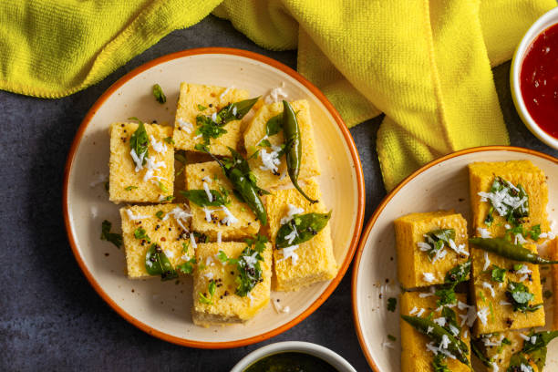

Back to States
Dhokla

Ingredients
- 1 cup gram flour (besan)
- 1 tbsp semolina (rava)
- 1 tsp ginger-green chili paste
- 1 tbsp lemon juice
- 1 tsp sugar
- 1 tsp ENO fruit salt
- Salt to taste
- 3/4 cup water
- 1 tbsp oil
- 1 tsp mustard seeds
- 5–6 curry leaves
- 2 green chilies (slit)
- 2 tbsp chopped coriander leaves
- 2 tbsp grated coconut (optional)
Instructions
1. In a bowl, mix besan, semolina, salt, sugar, ginger-chili paste, lemon juice, and water.
2. Stir to a smooth batter and let rest for 10 mins.
3. Add ENO and mix gently. Immediately pour into a greased steaming plate.
4. Steam for 15–20 mins or until a toothpick comes out clean.
5. Heat oil, crackle mustard seeds, add curry leaves and green chilies. Pour over dhokla.
6. Garnish with coriander and coconut. Cut into squares and serve.